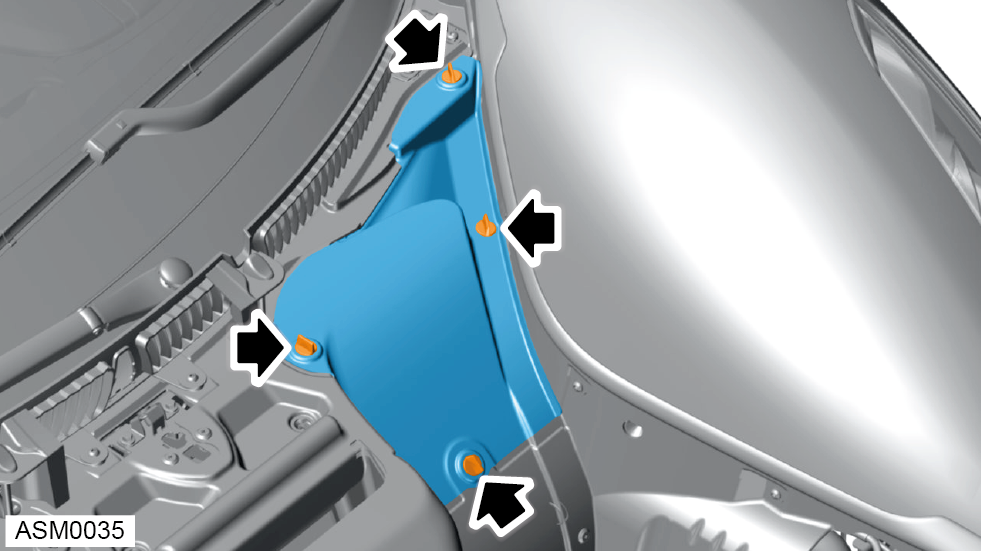
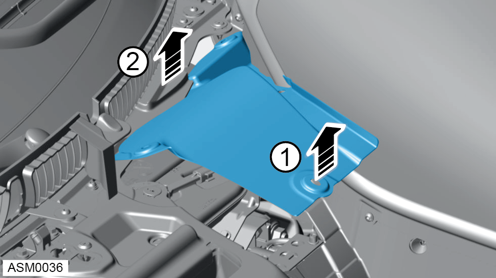

Duct Radiator Outlet - Left Side
Print
Operation Code: 46.04.05-02
Removal
- Open access hatch - front. Refer to procedure.

- Remove quarter turn fasteners (x4) securing the radiator duct to adjoining panels.

- Disengage radiator duct lower edge first then disengage upper edge from cowl panel.
- Remove duct from vehicle.
Installation
- Installation is the reverse of removal procedure.